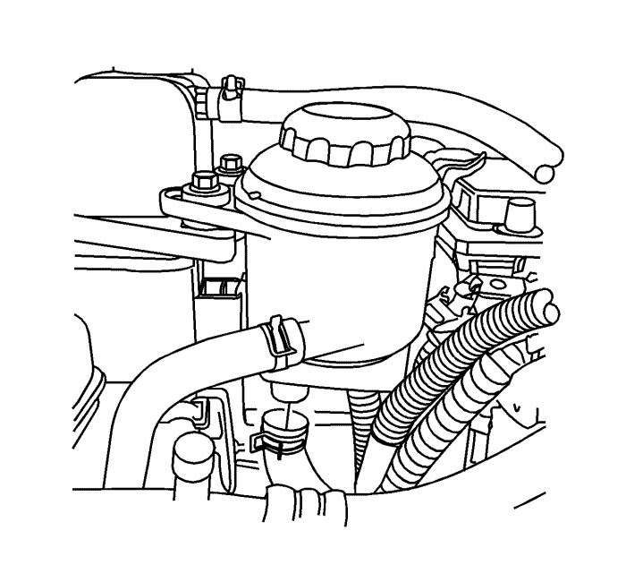
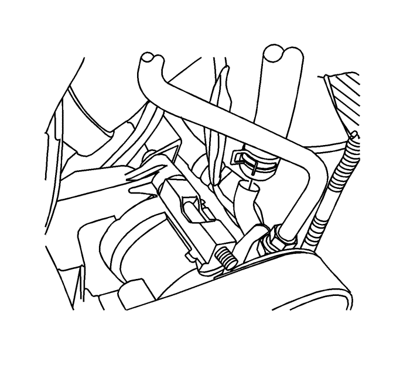
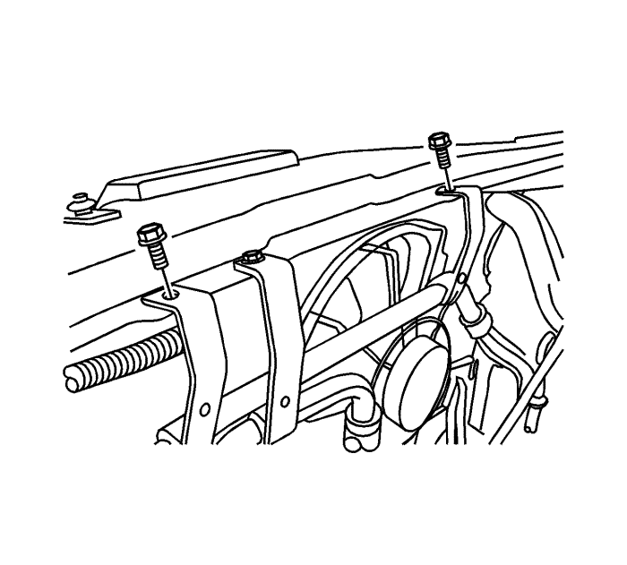

Sustitución del tubo flexible de salida del depósito de líquido de la servodirección. — 2,4l
Procedimiento de desmontaje
Nota: Se muestra la configuración del modelo con el volante a la izquierda. El modelo con el volante a la derecha presenta una configuración similar.
- Extraiga del depósito el aceite de la servodirección.
- Desmonte los tornillos del depósito.
- Coloque un recipiente colector debajo del vehículo para recoger el líquido de la dirección asistida. Utilice un trapo para recoger cualquier resto de líquido derramado.
Precaución: Consulte Atención: tubo flexible de la dirección asistida desconectado en la sección Prólogo

- Afloje la abrazadera del tubo flexible y desmonte el tubo flexible de salida del depósito.

- Afloje la abrazadera del tubo flexible y desmonte el tubo flexible de salida del depósito de la admisión de la bomba de la dirección asistida.

- Desmonte los tornillos de los soportes.
- Desmonte el tubo flexible de salida del depósito del vehículo.
Procedimiento de montaje
Precaución: Consulte Atención: los tubos flexibles que monte no deben presentar torsiones ni dobleces en la sección Prólogo
- Coloque el tubo flexible de salida del depósito desde el depósito hasta la bomba.
Precaución: Consulte Precaución con las fijaciones en la sección Prólogo
- Monte los tornillos en los soportes y apriételos a un par de 10 N·m (88,5 lb. pulg.).
- Acople el tubo flexible de salida del depósito y la abrazadera del tubo flexible del vehículo a la admisión de la bomba de la dirección asistida.
- Acople el tubo flexible de salida del depósito y la abrazadera del tubo flexible al depósito.
- Monte los tornillos en el depósito y apriételos a un par de 9 N·m (80 lb. pulg.).
Precaución: Consulte Precaución sobre el uso de aceite de dirección asistida adecuado en la sección Prólogo
- Llene el depósito con líquido de dirección asistida. Consultar Comprobación y adición de dirección de la dirección asistida .
Precaución: Consulte Atención: aire en el sistema de dirección asistida en la sección Prólogo
- Purgue el sistema de dirección asistida. Consultar Purga de aire del sistema de dirección asistida .
- Compruebe si hay fugas. Si existen fugas, corrija la causa que las provoca. Consultar Fugas de líquido de la dirección asistida .
| © Copyright Chevrolet Europe. All rights reserved |